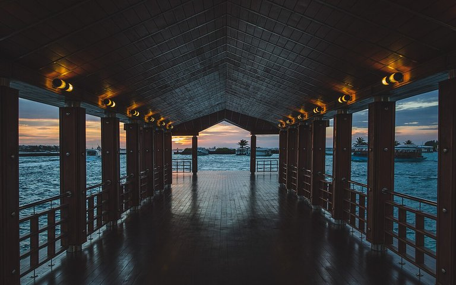

VII.The perception
One photograph, one call: a monocular depth model answers a 266 × 266 map of relative distance, and the page reads that same map three ways — as a lit surface you can turn, as a picture of itself, and as a depth of field you can focus.
A depth model turns one photograph into 70 756 relative distances, and one reply becomes a relief, a profile and a focus.
THE MODEL · Depth Anything V2 Small · 266×266 MAP · 70 756 VALUES · 283 024 B · 1 CALL

Samples · Unsplash, CC0 mirrors on Commons · Ishan · Ben Esteves · Jasper van der Meij · Caspe Sparsoe · Ludde Lorentz · chuttersnap · one call each
pick a sample
adjust
drag to orbit · wheel to zoom · double-click resets · arrow keys and + − 0 turn and zoom
relative, monocular depth — no metres, one face · the profile is in frame-heights
the commands this run sent
WHAT YOU ARE LOOKING AT
The still sits on the left, its reconstruction on the right, so the depth reads against the picture it came from. Each grid cell becomes two triangles, its corners carried into camera space by the predicted depth; the photograph supplies the colour.
Two readings of that one buffer: surface, the photograph lit by the map's own gradient, and normals, the orientation of that gradient in camera space. One band of light travels the view depth every 11 seconds, bright as it leaves and settled as it runs out, so the direction is watched rather than drawn.
The six photographs are six kinds of depth: a pier walkway, a curving forest path and a spiral staircase, where one-point perspective converges; layered canyon walls, where geology stacks three planes; a sea cave, where a rock arch occludes a bright bay; and rails leaving a dark tunnel.
WHAT JUST HAPPENED
The browser bounded the sample and base64-encoded it, because JSON cannot carry bytes; the bridge decoded it and the sandbox ran one graph over those pixels. Depth Anything V2 answered a 266 × 266 relative map, packed float32, cached by a hash of the bytes.
The page built the index once: one grid, two triangles per cell, a depth test per cell. Surface and normals read the same buffer, so a reading change is a uniform and never a rebuild.
The trace and the three figures below read that same reply. The trace is the run's own numbers. The map is the reply drawn as itself, one cell per value, with the transform the geometry uses one toggle away. The profile is the depth along a line you drag, in the shader's own display units. The focus is the map used as a lens, with the sharpness it achieves measured rather than asserted. None of them sends a command.
the map, as it arrived
reading the map…
the profile
drag across the photograph, or set the line here
the map as a depth of field
refocusing…
what came back
— B · one bounded JPEG · one call
Depth Anything V2 Small · one pass · —
the one call, byte for byte
1 The browser bounds the picture: drawn to a canvas at no more than 768 pixels on the long edge, re-encoded as JPEG at quality 0.85, stepped down if that is over the cap. What leaves the page is that encode, not the file in the repository.
2 JSON carries no bytes, so the encode goes into argument 5 as base64 and bin: [5] names it; proto: 2 asks for a keyed reply. The bridge decodes argument 5 back to bytes and sends one binary-safe RESP bulk, so emb never sees base64.
3 The sandbox takes SHA-256 of the bytes first and looks up img:depth:<sha256>:depth, one entry per output. A miss is decoded, squashed to 266 pixels square, rescaled 1/255 and normalised per channel.
4 One forward pass answers the one output. select: map reduces nothing: the tensor is 266 × 266 and 266 = 19 × 14, the export's multiple-of-14 rule, so nothing is sliced and no row is dropped.
5 BLOB is row-major little-endian float32, no header and no shape: 266 × 266 × 4 = 283 024 B, 70 756 values in the order the graph produced them. The shape is read once, from EMB.INFO, so a model served at another size does not falsify anything the page prints.
6 The bridge carries the bulk as base64, and base64 spends four characters for every three bytes: the map crosses it as 377 368 characters. RESP framing adds a few dozen header bytes on the server side; the payload arithmetic above dominates the wire.
7 The map is never normalised by the server, because depth is not a unit vector. The page owns the transform: it reads the 1st and 99th percentiles once, equalises by rank, blurs the result before differentiating it, and displaces the relief by that height. Every figure here reads that same field.
8 The cache identity is the bytes, not the picture: the same image again is a lookup, and the same photograph re-encoded at another quality is a fresh run. Measured on the development host, a cold call answers in about 265 ms and a repeat in about 194 µs; the readout prints whichever the bridge measured, and says so when the answer was cached.
the index, the tolerances and the limits
A depth model is not a feature model. It is trained to predict one number per pixel, so its map has no vector to compare and no label to print: the plate never claims an object, a name or a class. What it has is an ordering — which pixel is nearer than which — and that ordering is what every figure here draws.
The mesh is one regular grid at the density the reader picks, and the readout under the stage carries the vertex count of the tier drawn. A cell survives when its four edges and its diagonal each change the display depth by less than the cut tolerance, and the tolerance scales with the step, so the same surface survives at every tier: a smooth ramp changes more across a coarse step than a fine one, while a real occlusion boundary changes by the same amount either way. Refused cells leave a hole, which is the honest shape of an unknown surface.
The relief is lit, not painted: one key light from the upper left, a fill from the opposite side and a specular that follows the camera, with the normals taken from the depth map's own gradient. The shadows come from that same map — a cast term that walks each cell along the light and stops at taller terrain, and a contact term that darkens wherever the surface sits below its own neighbourhood. Both are baked once per sample, 70 756 cells each.
Elevation is the rank-equalised depth times a single gain, so the exaggeration slider scales the geometry without touching the buffer. The reading is a uniform over that buffer, which is why it composes with the camera: turn the surface and the normals turn with it. The camera is clamped to 25° of yaw and 15° of pitch, because a single-view reconstruction has one face.
The chosen sample is sent to the sandbox for one call; the model's weights are downloaded by the sandbox on boot, and this page ships none of them. A photograph you upload goes the same way: bounded to 768 pixels in the browser, sent as bytes, answered by the same graph. The picture itself is never stored; the sandbox keeps the reply in a cache keyed by a hash of those bytes, so a repeat is a lookup rather than another run.
The profile is not a second interpretation of the map. It samples the same bilinear reader the vertex shader displaces by, in the same units, so a point on the chart and a point on the relief are the same number: the reader can check one against the other and find no drift. What it cannot give is a distance in metres — a monocular model predicts an ordering, not a scale.
The focus is the map used as a photographic tool rather than as a measurement. The photograph is blurred by its distance from a band of the rank map, in six quantised steps drawn with ctx.filter and masked by the map's own band, and a Laplacian variance on a 192-pixel copy reports how much sharper the band is than everything outside it. Where the map is wrong the blur follows the mistake: a window, a thin branch and the mouth of the tunnel stay wrong on screen, because correcting them by hand would make the figure a claim instead of a demonstration.
The six photographs are Unsplash, reached through their CC0 mirrors on Wikimedia Commons, and 352 candidates from that import were measured before six were kept. Each went through the plate's own call as EMB.IMG depth BLOB OUTPUTS depth: the 283 024-byte map was min-max normalised and reduced to the p5 and p95 spread, the share below 0.10 and above 0.90, and the gradient energy. The six kept span 0.69–0.95 of the range with 1.1–36.2% of the frame near and 2.0–12.7% far, so every one of them has a foreground, a middle ground and a background for the relief to separate.
WHY IT MATTERS
A single-view reconstruction is a shell of what one camera saw, and it is worth more than a picture once it is a real mesh: geometry can be measured, cut and lit without a second model.
A depth map is also the one model output a reader can check with their own eyes. The near end of a corridor, the chair at the end of a pier, the valley behind a tunnel: the map either puts them in that order or it does not, and the profile prints the numbers behind the answer.
what one call buys
One pass, one map, three readings. The reply is 70 756 numbers and nothing else: no vector, no label, no second service. The relief is those numbers as a height field, the map figure is the same numbers drawn directly, the profile is one line through them, and the focus is the same line turned into a photographic control. One reply is enough for all four because none of them is a different measurement.
The declared shape is the contract. select: map reports rows and dim in EMB.INFO, and the page refuses to draw when the reply's element count disagrees with it, so a mis-shaped or truncated reply becomes a stated error instead of a picture that looks plausible.
A map is not a vector, and the plate never pretends otherwise. There is no similarity score here and no ranking: a dot product between two depth maps would mean nothing. What the map supports is comparison along its own axes — near against far along a line, this band against that one — and that is exactly what the profile and the focus do.
The model is not free. It has its own session, which EMB.INFO depth reports as image_sessions: 1, 27 MB of int8 weights on disk and about 100 MB resident once the CPU provider dequantises them. It stays warm, which is why a picture already seen is a lookup instead of a second wait.
No stored asset is involved. The page does not ship a precomputed map or a screenshot of one, because a figure drawn from a file cannot be checked against a reply. Every number on this page is written when the reply lands or measured in the browser, and the six photographs are the only committed assets.
The limits are the honest part. The depth is monocular: one camera, one face, no invented backside. It is relative: the profile's axis is frame-heights, not metres, and a different photograph has a different scale. It is approximate: the cut leaves holes at real occlusion boundaries, and the focus inherits every place the map is wrong.
THE EXACT COMMANDS
One command, one graph, packed float32. BLOB is the reply form: four bytes per number, so a 266 × 266 map crosses as 283 024 bytes instead of 70 756 decimal numbers.
EMB.IMG depth BLOB OUTPUTS depth <image bytes>
# -> ["depth", <283 024 B: 266 x 266 float32, relative>]
# the bridge request: `bin` names argument 5 as base64 bytes
{ "args": ["EMB.IMG", "depth", "BLOB", "OUTPUTS", "depth", "<b64>"],
"bin": [5], "proto": 2 }
# what the server declares, read once per page
EMB.INFO depth
# -> image_outputs.depth = { tensor: "predicted_depth", select: "map",
# rows: 266, dim: 266 }
# the config that names the one output
image:
preset: imagenet
size: 266
outputs:
- { name: depth, tensor: predicted_depth, select: map }
# 266 = 19 x 14, the export's multiple-of-14 rule; the map is never normalizedOne row per output: the tensor it leaves, the selector that shapes it, its rows × dim and its bytes.
- depth
- predicted_depth · select map · 266 × 266 · 283 024 B
- the map crosses as
- 377 368 base64 characters on the bridge, 283 024 bytes on the wire between the bridge and the server.
- VALUES on a map
- Refused: the bridge refuses the keyword for the image command, and the server beneath it refuses a map's VALUES, naming BLOB and its 70 756 numbers.
- a second image
- Refused by the bridge: EMB.IMG takes exactly one image per call.
- any other model
- The sandbox's image surface is one model. An image command naming anything else is refused before the server is called, and the refusal names depth.
- the map is data, not a vector
- 266 × 266 numbers in row-major order, never normalised, never pooled. The server reports the shape; the client owns the transform.
- the cut is topology, not a filter
- A cell is refused before any triangle exists, so no triangle spans two objects. The tolerance is a control: lower it and the mesh spends its triangles on the material, raise it and only real object edges open.
- two readings, one geometry
- Surface and normals share one vertex buffer and one index; the colour changes, the geometry does not.
- the normals are the map's
- Each normal is the gradient of the depth model's own ordering, clamped so a cliff reads as a steep ramp instead of a black band. It is a convincing orientation, not a recovered surface normal.
- the profile is the shader's own function
- It samples the same bilinear reader and rank equalisation the vertices are displaced by, in display units, so the chart and the relief cannot disagree.
- the focus is not a lens
- It is the map used as a depth of field: six bands, blur by distance from the chosen one, and a measured sharpness ratio. The places the map is wrong stay wrong on screen.
- what it is not
- No labels, no segmentation head, no metric scale and no invented geometry: the reconstruction has one face, the depth is monocular and relative, and the profile's axis is in frame-heights.
Depth Anything V2 Small is Apache-2.0. The graph is downloaded by the sandbox on boot and this repository ships no weights. The six photographs arrive as their Wikimedia Commons CC0 mirrors, credited per file in website/demos/samples/CREDITS.md.